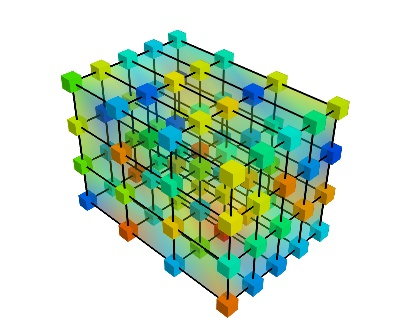
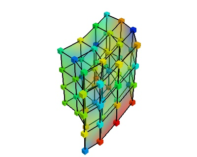
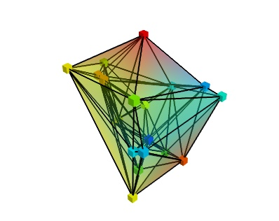
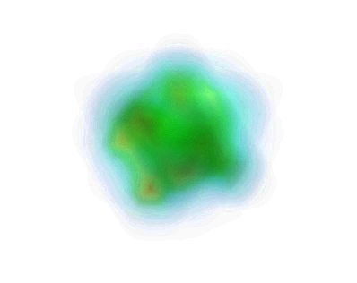

Volumetric data structures¶
Volumetric data structures expose numerical values embedded in a world space. For instance, a volume could expose the T1 intensity, as acquired in scanner space, or the BOLD signal in MNI152 template space. The values can be multi-dimensional, in the case of a BOLD signal, the fMRI signal would correspond to a time series at each position in world space.
The image structure: VolumeImg¶
The structure most often used in neuroimaging is the VolumeImg.
It corresponds, for instance, to the structure used in the Nifti files.
This structure stores data as an n-dimensional array, with n being at
least 3, alongside with the necessary information to map it to world
space.
- definition:
A volume-image (class:
VolumeImg) is a volumetric datastructure given by data points lying on a regular grid: this structure is a generalization of an image in 3D. The voxels, vertices of the grid, are mapped to coordinates by an affine transformation. As a result, the grid is regular and evenly-spaced, but may not be orthogonal, and the spacing may differ in the 3 directions.
The data is exposed in a multi dimensional array, with the 3 first axis
corresponding to spatial directions. A complete description of this
object can be found on the page: VolumeImg.
Useful methods on volume structures¶
Any general volume structures will implement methods for querying the
values and changing world space (see the VolumeField
documentation for more details):
|
Return the values of the data at the world-space positions given by x, y, z |
Return a new image embedding the same data in a different word space using the given world to world transform. |
Also, as volumes structure may describe the spatial data in various way,
you can easily to convert to a VolumeImg, ie a regular grid, for
instance to do implement an algorithm on the grid such as spatial
smoothing:
|
Resample the image to be an image with the data points lying on a regular grid with an affine mapping to the word space (a nipy VolumeImg). |
Finally, different structures can embed the data differently in the same world space, for instance with different resolution. You can resample one structure on another using:
|
Resample the volume to be sampled similarly than the target volumetric structure. |
FIXME: Examples would be good here, but first we need io and template data to be wired with datasets.
More general data structures¶
The VolumeImg is the most commonly found volume structure, and
the simplest to understand, however, volumetric data can be described in
more generic terms, and for performance reason it might be interesting to
use other objects.
Here, we give a list of the nipy volumetric data structures, from most
specific, to most general. When you deal with volume structures in your
algorithms, depending on which volume structure class you are taking as
an input, you can assume different properties of the data. You can always
use VolumeImg.as_volume_img() to cast the volume structure in a
VolumeImg that is simple to understand and easy to work with,
but it may not be necessary.
Implemented classes¶
Implemented classes (or concrete classes) are structures that you can readily use directly from nipy.
VolumeGridIn a
VolumeGrid, the data points are sampled on a 3D grid, but unlike for aVolumeImg, grid may not be regular. For instance, it can be a grid that has been warped by a non-affine transformation. Like with theVolumeImg, the data is exposed in a multi dimensional array, with the 3 first axis corresponding to spatial directions.
Abstract classes¶
Abstract classes cannot be used because they are incompletely implemented. They serve as to define the interface: the type of objects that you can use, or how you can extend nipy by exposing the same set of methods and attributes (the interface).
VolumeDataIn this volumetric structure, the data is sampled for some points in the world space. The object knows how to interpolate between these points. The underlying values are stored in a multidimensional array-like object that can be indexed and sliced.
This is an abstract base class: it defines an interface, but is not fully functional, and can be used only via its children class (such as
VolumeGridorVolumeImg).
VolumeFieldThis is the most general volumetric structure (base class): all the nipy volume expose this interface. This structure does not make any assumptions on how the values are internal represented, they may, for instance, be represented as a function, rather than as data points, or as a data structure that is not an array, such as a graph.
This is also an abstract base class: it defines the core nipy volumetric data structure interface: you can rely on all the methods documented for this class in any nipy data structure.